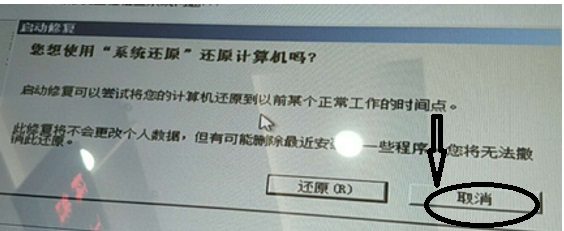

<!DOCTYPE html>
<html>
<head><meta name="generator" content="Hexo 3.8.0">
  <meta charset="utf-8">
  

  
  <title>Hexo</title>
  <meta name="viewport" content="width=device-width, initial-scale=1, maximum-scale=1">
  <meta property="og:type" content="website">
<meta property="og:title" content="Hexo">
<meta property="og:url" content="https://github.com/linuxpy/github.io/index.html">
<meta property="og:site_name" content="Hexo">
<meta property="og:locale" content="default">
<meta name="twitter:card" content="summary">
<meta name="twitter:title" content="Hexo">
  
    <link rel="alternate" href="/github.io/atom.xml" title="Hexo" type="application/atom+xml">
  
  
    <link rel="icon" href="/favicon.png">
  
  
    <link href="//fonts.googleapis.com/css?family=Source+Code+Pro" rel="stylesheet" type="text/css">
  
  <link rel="stylesheet" href="/github.io/css/style.css">
</head>
</html>
<body>
  <div id="container">
    <div id="wrap">
      <header id="header">
  <div id="banner"></div>
  <div id="header-outer" class="outer">
    <div id="header-title" class="inner">
      <h1 id="logo-wrap">
        <a href="/github.io/" id="logo">Hexo</a>
      </h1>
      
    </div>
    <div id="header-inner" class="inner">
      <nav id="main-nav">
        <a id="main-nav-toggle" class="nav-icon"></a>
        
          <a class="main-nav-link" href="/github.io/">Home</a>
        
          <a class="main-nav-link" href="/github.io/archives">Archives</a>
        
      </nav>
      <nav id="sub-nav">
        
          <a id="nav-rss-link" class="nav-icon" href="/github.io/atom.xml" title="RSS Feed"></a>
        
        <a id="nav-search-btn" class="nav-icon" title="Search"></a>
      </nav>
      <div id="search-form-wrap">
        <form action="//google.com/search" method="get" accept-charset="UTF-8" class="search-form"><input type="search" name="q" class="search-form-input" placeholder="Search"><button type="submit" class="search-form-submit">&#xF002;</button><input type="hidden" name="sitesearch" value="https://github.com/linuxpy/github.io"></form>
      </div>
    </div>
  </div>
</header>
      <div class="outer">
        <section id="main">
  
    <article id="post-pdf" class="article article-type-post" itemscope="" itemprop="blogPost">
  <div class="article-meta">
    <a href="/github.io/2019/02/04/pdf/" class="article-date">
  <time datetime="2019-02-04T07:35:25.000Z" itemprop="datePublished">2019-02-04</time>
</a>
    
  </div>
  <div class="article-inner">
    
    
      <header class="article-header">
        
  
    <h1 itemprop="name">
      <a class="article-title" href="/github.io/2019/02/04/pdf/">pdf</a>
    </h1>
  

      </header>
    
    <div class="article-entry" itemprop="articleBody">
      
        

	<div class="row">
    <embed src="./kpez.pdf" width="100%" height="550" type="application/pdf">
	</div>


      
    </div>
    <footer class="article-footer">
      <a data-url="https://github.com/linuxpy/github.io/2019/02/04/pdf/" data-id="ck4gg4kw30002bgmg1e7leo8p" class="article-share-link">Share</a>
      
      
    </footer>
  </div>
  
</article>


  
    <article id="post-zhou" class="article article-type-post" itemscope="" itemprop="blogPost">
  <div class="article-meta">
    <a href="/github.io/2019/01/21/zhou/" class="article-date">
  <time datetime="2019-01-21T11:24:27.000Z" itemprop="datePublished">2019-01-21</time>
</a>
    
  </div>
  <div class="article-inner">
    
    
      <header class="article-header">
        
  
    <h1 itemprop="name">
      <a class="article-title" href="/github.io/2019/01/21/zhou/">zhou</a>
    </h1>
  

      </header>
    
    <div class="article-entry" itemprop="articleBody">
      
        <p><a href="https://wenku.baidu.com/view/72de75a5a0c7aa00b52acfc789eb172dec63995a" target="_blank" rel="noopener">DATA MINER(数据挖掘)</a><br><a href="https://wenku.baidu.com/view/81eab0aff12d2af90242e6b3" target="_blank" rel="noopener">周楚新博士论文</a><br><a href="https://wenku.baidu.com/view/a1882a55f61fb7360b4c65ea" target="_blank" rel="noopener">用QIS D2 药物发现系统研制艾兹病与癌症鸡尾酒配方</a><br><a href="https://wenku.baidu.com/view/d32bf086a8114431b90dd8c1" target="_blank" rel="noopener">周楚新博士生物大数据专利20150505</a><br><a href="https://baike.baidu.com/item/%E5%91%A8%E6%A5%9A%E6%96%B0" target="_blank" rel="noopener">周楚新</a></p>

      
    </div>
    <footer class="article-footer">
      <a data-url="https://github.com/linuxpy/github.io/2019/01/21/zhou/" data-id="ck4gg4kw70003bgmg9pwthbme" class="article-share-link">Share</a>
      
      
    </footer>
  </div>
  
</article>


  
    <article id="post-work" class="article article-type-post" itemscope="" itemprop="blogPost">
  <div class="article-meta">
    <a href="/github.io/2019/01/20/work/" class="article-date">
  <time datetime="2019-01-20T08:08:12.000Z" itemprop="datePublished">2019-01-20</time>
</a>
    
  </div>
  <div class="article-inner">
    
    
      <header class="article-header">
        
  
    <h1 itemprop="name">
      <a class="article-title" href="/github.io/2019/01/20/work/">工作笔记</a>
    </h1>
  

      </header>
    
    <div class="article-entry" itemprop="articleBody">
      
        <p><a href="https://www.cnblogs.com/tla001/p/6436192.html" target="_blank" rel="noopener">shell之netstat命令</a><br><a href="https://www.liaoxuefeng.com/wiki/0014316089557264a6b348958f449949df42a6d3a2e542c000" target="_blank" rel="noopener">廖雪峰的官方网站 Blog</a><br><a href="https://www.imsxm.com/2018/07/idea-2018-1-5-crack-patcher.html" target="_blank" rel="noopener">Jetbrains 2018.3.1激活补丁[持续更新]</a><br><a href="https://blog.csdn.net/u014044812/article/details/78727496#" target="_blank" rel="noopener">pyCharm最新2019激活码</a><br><a href="https://blog.csdn.net/qq_29310257/article/details/80535652" target="_blank" rel="noopener">idea和pycharm最新版激活方法，激活时间到2099年，不吹牛，亲测有效</a><br><a href="https://wenku.baidu.com/view/56d77376f242336c1fb95e01.html" target="_blank" rel="noopener">自助终端常见故障处理手册</a><br><a href="http://blog.sina.com.cn/s/blog_ae7ffc4c0102vsyu.html" target="_blank" rel="noopener">红外触摸一体机常见故障的解决与维护方法</a><br><a href="http://www.bjkingtech.com/cjwt/31.html" target="_blank" rel="noopener">触摸屏一体机如何进行清洁及维护</a><br><a href="http://www.mamicode.com/info-detail-2163204.html" target="_blank" rel="noopener">三个方法轻松解决win7旗舰版系统运行慢</a><br><a href="https://blog.csdn.net/qq_24232123/article/details/79781527" target="_blank" rel="noopener">centos 7.3 开放端口并对外开放</a><br><a href="https://blog.csdn.net/zx110503/article/details/78787483" target="_blank" rel="noopener">CentOS7开启端口（永久）</a><br><a href="http://www.ha97.com/4634.html" target="_blank" rel="noopener">entOS Linux下VNC Server远程桌面配置详解</a><br><a href="https://blog.csdn.net/wamath/article/details/76003128" target="_blank" rel="noopener">CentOS 7安装TigerVNC Server</a><br><a href="https://blog.csdn.net/zll_0405/article/details/78767857" target="_blank" rel="noopener">在Linux上安装VNC</a><br><a href="https://www.cnblogs.com/miaomiaokaixin/p/5526732.html" target="_blank" rel="noopener">inux环境vnc部署过程详解 - 秒秒开心 - 博客园</a><br><a href="https://blog.csdn.net/capecape/article/details/78501317?locationNum=5&amp;fps=1" target="_blank" rel="noopener">centos7 挂载fat32格式的u盘和ntfs格式的移动硬盘</a><br><a href="https://blog.csdn.net/lengyue1084/article/details/51477872" target="_blank" rel="noopener">执行umount 的时候却提示:device is busy 的处理方法</a><br><a href="https://blog.csdn.net/u010048823/article/details/51306175" target="_blank" rel="noopener">Centos 挂载U盘</a><br><a href="https://blog.csdn.net/u010048823/article/details/51306175" target="_blank" rel="noopener">centos7下挂载U盘和移动硬盘</a><br><a href="https://blog.csdn.net/longzhutengyue/article/details/84782339" target="_blank" rel="noopener">centos7插入移动硬盘（或u盘）读取不了</a><br><a href="https://blog.csdn.net/worldoom2012/article/details/51538400" target="_blank" rel="noopener">修改注册表添加IE信任站点及启用Activex控件方法</a><br><a href="https://blog.csdn.net/dongdingbaihe/article/details/38755011?utm_source=blogxgwz3" target="_blank" rel="noopener">IE添加可信任站点,启用ActiveX插件批处理</a><br><a href="https://blog.csdn.net/goodlife99999/article/details/25160503" target="_blank" rel="noopener">IE 高级设置里面一片空白，没有任何选项</a><br><a href="https://blog.csdn.net/xing_6/article/details/5469537" target="_blank" rel="noopener">IE-Internet操作选项设置与注册表项对应关系</a><br><a href="https://blog.csdn.net/weixin_42890981/article/details/82530277" target="_blank" rel="noopener">NFS</a><br><a href="https://www.cnblogs.com/jkko123/p/6361476.html?utm_source=itdadao&amp;utm_medium=referral" target="_blank" rel="noopener">centos7下NFS使用与配置</a><br><a href="https://www.cnblogs.com/me80/p/7464125.html" target="_blank" rel="noopener">NFS笔记（一）NFS服务器工作原理及详细配置</a><br><a href="https://www.cnblogs.com/liuyisai/p/5992511.html" target="_blank" rel="noopener">Linux下NFS服务器的搭建与配置)</a><br><a href="https://blog.csdn.net/frankarmstrong/article/details/78774679" target="_blank" rel="noopener">NFS原理详解</a><br><a href="https://blog.csdn.net/solaraceboy/article/details/78743563" target="_blank" rel="noopener">Linux环境下NFS服务的安装与配置</a><br><a href="https://www.cnblogs.com/hushaojun/p/4533241.html" target="_blank" rel="noopener">python判断文件和文件夹是否存在、创建文件夹</a><br><a href="https://www.jb51.net/article/66452.htm" target="_blank" rel="noopener">Python判断文件和文件夹是否存在的方法</a><br><a href="https://blog.csdn.net/u013247765/article/details/79050947" target="_blank" rel="noopener">python 判断目录和文件是否存在，若不存在即创建</a><br><a href="https://blog.csdn.net/wang010366/article/details/52512516" target="_blank" rel="noopener">python判断文件和文件夹是否存在、创建文件夹</a><br><a href="https://www.cnblogs.com/TaleG/p/5352333.html" target="_blank" rel="noopener">python编写Mysql自动备份脚本</a><br><a href="https://www.linuxidc.com/Linux/2017-09/147081.htm" target="_blank" rel="noopener">MySQL(MariaDB)定时自动热备份+增量+远程备份脚本</a><br><a href="https://www.v2ex.com/t/154717" target="_blank" rel="noopener">有什么简单的 mysql 增量备份方案？</a><br><a href="https://blog.csdn.net/liuchuanlong/article/details/80802511" target="_blank" rel="noopener">Mysql 增量备份和全量备份</a><br><a href="https://blog.csdn.net/Xun_Jia/article/details/79385317" target="_blank" rel="noopener">xtrabackup模拟增量备份与恢复</a><br><a href="https://blog.csdn.net/shangyuanlang/article/details/80864580" target="_blank" rel="noopener">Centos 6.9 安装xtrabackup-2.4.8 通用包，yum安装，全量备份，增量备份</a><br><a href="https://www.cnblogs.com/kevingrace/p/6114979.html" target="_blank" rel="noopener">mysql备份系列（2）–mysqldump备份（全量+增量）方案操作记录</a><br><a href="https://blog.csdn.net/so_do_it/article/details/79269569" target="_blank" rel="noopener">ubuntu 触摸屏横屏变竖屏解决 触摸功能仍然是横屏的问题</a><br><a href="https://blog.csdn.net/m0_38136783/article/details/82629098" target="_blank" rel="noopener">ubuntu 开机自动打开网页</a><br><a href="https://blog.csdn.net/u013203733/article/details/76209116" target="_blank" rel="noopener">ubuntu开机不进入桌面而是直接打开chromium浏览器并显示固定网页</a><br><a href="https://blog.csdn.net/hpoolg/article/details/51720420" target="_blank" rel="noopener">在Ubuntu中创建火狐浏览器启动器（快捷方式）</a><br><a href="https://blog.csdn.net/xiaohupashu/article/details/78512211" target="_blank" rel="noopener">树莓派使用Chromium启动首页的命令</a></p>
<p>在/usr/bin/./chromium-browser启动命令，　查看log输出</p>
<p><a href="http://blog.sina.com.cn/s/blog_4dda073c0102xic7.html" target="_blank" rel="noopener">Ubuntu桌面开机启动Chrome并全屏显示,隐藏使用者 </a></p>
<p>设置&gt;&gt;详细信息&gt;&gt;用户&gt;&gt;解锁&gt;&gt;（输入密码进行认证）&gt;&gt;{自动登录}选项打开<br><a href="https://jingyan.baidu.com/article/f79b7cb32280f59144023eb9.html" target="_blank" rel="noopener">谷歌浏览器直接允许flash，禁止询问的方</a><br>chrome://flags/#enable-ephemeral-flash-permission<br>将Default改为Disabled，左下角点击 RELAUNCH NOW （现在重新开始）<br><a href="https://blog.csdn.net/csdn_zhishui/article/details/85704619" target="_blank" rel="noopener">Ubuntu安装Chrome浏览器，同时解决“您登录计算机时,您的登录密钥环未被解锁”问题</a><br><a href="https://blog.csdn.net/hotfire2001/article/details/41041655" target="_blank" rel="noopener">安装Chromium浏览器并添加Flash插件Pepper Flash Playe</a><br><a href="https://jingyan.baidu.com/article/48a4205700ec97a925250461.html" target="_blank" rel="noopener">为Chromium浏览器添加并开启flash插件</a></p>
<p> 浏览器打开 chrome://settings/content/flash </p>
<ol start="2">
<li>禁止网站运行Flash -&gt; 改为“先询问（推荐）” </li>
<li>允许-&gt;添加 </li>
<li>添加网站-&gt;添加(若没有添加按钮，下面有解决方法) </li>
<li>依次将常见顶级域名加入允许名单</li>
<li><em>.]com[</em>.]net[<em>.]org[</em>.]cn</li>
<li>没有添加按钮 </li>
<li>浏览器打开 chrome://flags/#enable-ephemeral-flash-permission </li>
<li>把Ephemeral Flash Permission从Default改为Disabled </li>
<li>重新打开Chrome，进入falsh设置 chrome://settings/content/flash</li>
<li>cat auto<br>florence&amp;<br>sleep 30<br>firefox   <a href="http://kpzg.agri114.cn/kpzg_xyez/xyez_h/" target="_blank" rel="noopener">http://kpzg.agri114.cn/kpzg_xyez/xyez_h/</a><br>chromium-browser   –kiosk <a href="http://kpzg.agri114.cn/kpzg_xyez/xyez_h/" target="_blank" rel="noopener">http://kpzg.agri114.cn/kpzg_xyez/xyez_h/</a><br>auto放在启动应用程序（start app)–增加<br><a href="https://blog.csdn.net/bjhuanghun/article/details/79215268" target="_blank" rel="noopener">ubuntu开机启动应用程序</a><br><a href="https://blog.csdn.net/fx_yzjy101/article/details/80243710" target="_blank" rel="noopener">解决Ubuntu 18.04中文输入法的问题，安装搜狗拼音</a><br><a href="https://blog.csdn.net/qq_33159059/article/details/85019467" target="_blank" rel="noopener">https://blog.csdn.net/qq_33159059/article/details/85019467</a><br><a href="https://jingyan.baidu.com/article/e4511cf363bdd22b845eaf23.html" target="_blank" rel="noopener">https://jingyan.baidu.com/article/e4511cf363bdd22b845eaf23.html</a><br><a href="https://blog.csdn.net/wuchenlhy/article/details/79207406" target="_blank" rel="noopener">Ubuntu系统安装X11VNC实现远程可视化桌面操作教程</a><br><a href="https://www.linuxidc.com/Linux/2018-05/152282.htm" target="_blank" rel="noopener">如何在Ubuntu 18.04上安装TeamViewer</a><br><a href="https://blog.csdn.net/github_33934628/article/details/52831784" target="_blank" rel="noopener">Ubuntu-Chromium如何安装flash插件</a><br><a href="https://blog.csdn.net/update7/article/details/77949198" target="_blank" rel="noopener">win7下安装Ubuntu后进不去win7的完美解决方法</a><br><a href="https://blog.csdn.net/hxh5801050/article/details/77801050" target="_blank" rel="noopener">Ubuntu16.04中启用root用户,以及root用户自动登录</a><br><a href="https://blog.csdn.net/u011534057/article/details/58135247" target="_blank" rel="noopener">chromium在root用户下不能运行的解决方法</a><br><a href="https://blog.csdn.net/Xingyb14/article/details/81697565" target="_blank" rel="noopener">https://blog.csdn.net/Xingyb14/article/details/81697565</a><br>方式1：老版谷歌chrome浏览器里输入：<br>chrome://flags/#run-all-flash-in-allow-mode<br>方式2：新版谷歌68，69，chrome浏览器操作方式：<br>新版不再允许保存flash设定和添加允许flash的站点<br>先打开chrome界面：chrome://flags/#enable-ephemeral-flash-permission<br>71.0.3578.98 (Built on Ubuntu , running on Ubuntu 18.04)<br>操作系统    32.0.0.142 /usr/lib/adobe-flashplugin/libpepflashplayer.so<br>sudo gedit /etc/chromium-browser/default<br>　　添加一行　CHROMIUM_FLAGS=”–ppapi-flash-path=/usr/lib/chromium-browser/plugins/libpepflashplayer.so –ppapi-flash-version=32.0.0.142“</li>
</ol>
<p><a href="https://www.cnblogs.com/SavionZhang/p/4106338.html" target="_blank" rel="noopener">setups</a></p>
<p><a href="https://blog.csdn.net/u010188178/article/details/82500833" target="_blank" rel="noopener">Setup Factory安装及程序安装包制作教程</a><br><a href="https://blog.csdn.net/wait_for_taht_day5/article/details/50382423" target="_blank" rel="noopener">ubuntu桌面，窗口，终端快捷键+怎么设置快捷键</a><br>然后到“Apps-&gt;Metacity-&gt;Global keybingdings”<br>如果修改“显示桌面”的快捷键，就找出 “show desktop”编辑值为<super>d即可。<br>注：<super>就是windows下的”win”键。</super></super></p>
<p>ctrl + super + d </p>
<p><a href="https://blog.csdn.net/dangerous_fire/article/details/7850340" target="_blank" rel="noopener">https://blog.csdn.net/dangerous_fire/article/details/7850340</a></p>
<p>计算机\HKEY_CURRENT_USER\Software\Microsoft\Windows\CurrentVersion\Internet Settings\ZoneMap\Domains</p>
<p>Zones是具体设置安全信息的键值。其下面有0（我的电脑）、1（本地Internet区域）、2（受信人的站点区域）、3（Internet区域）、4（受限制的站点区域）五个子键，每个子键下面都有包含设置安全信息的DWORD值。这些DWORD值等于0（允许）、1（出现提示）或3（禁止执行），另外说明除外。<br>1004  下载未签名的 ActiveX 控件 （0）<br>1201  对没有标记为安全的 ActiveX 控件进行初始化和脚本运行（0）</p>
<p>HKEY_CURRENT_USER\Software\Microsoft\Internet Explorer\Download</p>
<p>先打开运行 regedit 注册表编辑 ， 然后按步进入  HKEY_LOCAL_MACHINE -&gt; SYSTEM -&gt; ControllSet001 -&gt; Control -&gt; GraphicsDrivers -&gt; Configuration -&gt; 查找 scaling ， 将 scaling 值 由 4 改为 3<br><a href="https://support.microsoft.com/zh-cn/help/18520/download-internet-explorer-11-offline-installer" target="_blank" rel="noopener">下载 Internet Explorer 11</a><br>sudo apt-get install x11vnc<br><a href="https://blog.csdn.net/zbgjhy88/article/details/81009222" target="_blank" rel="noopener">Linux远程桌面服务VNC/XRDP/Xdmcp/SSH+X11转发及其在树莓派上的使用</a><br><a href="https://jingyan.baidu.com/article/2d5afd6933a67b85a2e28e9f.html" target="_blank" rel="noopener">ubuntu16.04如何安装搜狗输入法听语音</a><br>[<a href="(https://blog.csdn.net/feilianbb/article/details/50650327">Linux下的磁盘克隆</a>)<br>Ghost for Linux 出色的硬盘对拷工具<br><a href="https://sourceforge.net/projects/g4l" target="_blank" rel="noopener">https://sourceforge.net/projects/g4l</a> 　<br><a href="https://blog.csdn.net/nontew/article/details/12616483" target="_blank" rel="noopener">linux环境下的硬盘批量复制</a><br>1、升级 2、安装x11vnc（teamviewer) 3、安装汉字 4、<a href="https://zhidao.baidu.com/question/1930564254177763987.html" target="_blank" rel="noopener">去掉密码</a>(seahorse和电源)，5、安装start 6、安装chromium 7、flash安装设置 8、设置自启动、9、虚拟键盘安装设置；问题 左右滑动 汉字输入 flash允许 科普e站授权 语音<br><a href="https://blog.csdn.net/iehadoop/article/details/82961401" target="_blank" rel="noopener">Ubuntu18.04安装搜狗输入法</a><br><a href="https://blog.csdn.net/fx_yzjy101/article/details/80243710" target="_blank" rel="noopener">https://blog.csdn.net/fx_yzjy101/article/details/80243710</a><br><a href="https://blog.csdn.net/wangmx1993328/article/details/81164440" target="_blank" rel="noopener">Firefox 全屏模式启动</a><br><a href="https://blog.csdn.net/qq_22527639/article/details/80991557" target="_blank" rel="noopener">Ubuntu 18.04 firefox浏览器装flash</a><br><a href="https://jingyan.baidu.com/article/d5c4b52bad5eaada560dc5dc.html" target="_blank" rel="noopener">https://jingyan.baidu.com/article/d5c4b52bad5eaada560dc5dc.html</a></p>
<ol>
<li>ubuntu安装sox（音乐播放器）<br>$ sudo apt-get install sox<br>sox添加mp3格式支持<br>$ sudo apt-get install libsox-fmt-mp3</li>
<li>下载代码<br>源码在此 <a href="http://git.oschina.net/sqp/codes/o9x1d6whztg2i3aneyq8r" target="_blank" rel="noopener">http://git.oschina.net/sqp/codes/o9x1d6whztg2i3aneyq8r</a><br>复制代码到 ~/tts<br>3.运行<br>$ python ~/tts/tts.py “你好” <h1 id="效果：女声读你好"><a href="#效果：女声读你好" class="headerlink" title="效果：女声读你好"></a>效果：女声读你好</h1><a href="https://linuxtoy.org/archives/festival_on_ubuntu.html" target="_blank" rel="noopener">https://linuxtoy.org/archives/festival_on_ubuntu.html</a><br><strong>sudo apt-get install ubuntu-restricted-extras(读音ubt,firefox)</strong><br><a href="https://blog.csdn.net/qq_22527639/article/details/80991557" target="_blank" rel="noopener">Ubuntu 18.04 firefox浏览器装flash</a><br><a href="https://blog.csdn.net/weixin_40522162/article/details/80287296" target="_blank" rel="noopener">https://blog.csdn.net/weixin_40522162/article/details/80287296</a><br>使用如下命令：sudo apt-get update，后面要输入密码<br><a href="https://jingyan.baidu.com/article/295430f1cbda8f0c7e00508b.html" target="_blank" rel="noopener">sudo apt-get install flashplugin-installer</a><br><strong>sudo apt-get install florence</strong> 软键盘<br>about:config layout.css.devPixelsPerPx<br><a href="https://blog.csdn.net/liu_jiangwen/article/details/85215297" target="_blank" rel="noopener">sudo apt-get install gnome-shell-extension-dashtodoc</a>k<br><a href="https://blog.csdn.net/weixin_41053564/article/details/81272845" target="_blank" rel="noopener">Ubuntu18.04如何把launcher的位置从左边移动到底部</a><br><a href="https://www.jianshu.com/p/afa26fe8c7c6?utm_campaign=maleskine&amp;utm_content=note&amp;utm_medium=seo_notes&amp;utm_source=recommendation" target="_blank" rel="noopener">dask-to-dock 安装配置(图文教程)</a><br><a href="https://blog.csdn.net/chen280085871/article/details/80712386" target="_blank" rel="noopener">https://blog.csdn.net/chen280085871/article/details/80712386</a><br><a href="https://blog.csdn.net/haeasringnar/article/details/81809040" target="_blank" rel="noopener">安装好Ubuntu18.04之后要做的事</a><br>sudo dpkg-reconfigure lightdm  gdm3<br><a href="https://imcn.me/html/y2017/29262.html" target="_blank" rel="noopener">手动安装 Dash to Dock Gnome 扩展</a><br><a href="https://www.cnblogs.com/zhuxiaoxi/p/8400529.html" target="_blank" rel="noopener">GNOME Shell Extension常用扩展</a><br><a href="https://www.cnblogs.com/qingruozhu/p/9510846.html" target="_blank" rel="noopener">ubt-teamvison</a><br><a href="https:/www.cnblogs.com/mmdln/p/9071525.html" target="_blank" rel="noopener">ubt-root-password</a><br><strong>一条命令搞定ubuntu 系统 firefox浏览器安装flash插件sudo apt-get install adobe-flashplugin</strong><br><strong>whereis firefox；显示：usr/bin/firefox；firefox 网址</strong><br>cd /var/crash/ ； ls  //可以查看错误报告；sudo rm /var/crash/*     ；但是，这只是删除掉的是错误报告，如果系统再有什么崩溃，又会再报错。vi/etc/default/apport  //进行apport设置<br>这里将enabled = 1 修改为下图的 0，然后保存，以后就不会推送系统程序出现问题了<br>cat /home/wlj/kpez.sh<br>sleep 10<br>/usr/bin/florence&amp;<br>/usr/bin/onboard&amp;<br>#su root<br>#cd /usr/bin<br>#./firefox <a href="http://kpzg.agri114.cn/kpzg_xyez/sqez/?cid=gz_qnz_dy_0002" target="_blank" rel="noopener">http://kpzg.agri114.cn/kpzg_xyez/sqez/?cid=gz_qnz_dy_0002</a><br>/usr/bin/firefox <a href="http://kpzg.agri114.cn/kpzg_xyez/sqez/?cid=gz_qnz_dy_0002" target="_blank" rel="noopener">http://kpzg.agri114.cn/kpzg_xyez/sqez/?cid=gz_qnz_dy_0002</a><br><strong>ctrl+win+d 桌面<br>F11 全屏开关<br>对远程teamvison也是有效的
</strong></li>
</ol>

      
    </div>
    <footer class="article-footer">
      <a data-url="https://github.com/linuxpy/github.io/2019/01/20/work/" data-id="ck4gg4kwx000cbgmgsapin1qo" class="article-share-link">Share</a>
      
      
    </footer>
  </div>
  
</article>


  
    <article id="post-mydoc" class="article article-type-post" itemscope="" itemprop="blogPost">
  <div class="article-meta">
    <a href="/github.io/2019/01/16/mydoc/" class="article-date">
  <time datetime="2019-01-16T13:41:49.000Z" itemprop="datePublished">2019-01-16</time>
</a>
    
  </div>
  <div class="article-inner">
    
    
      <header class="article-header">
        
  
    <h1 itemprop="name">
      <a class="article-title" href="/github.io/2019/01/16/mydoc/">文档</a>
    </h1>
  

      </header>
    
    <div class="article-entry" itemprop="articleBody">
      
        <p><a href="http://www.sxast.cn/html/lm/20190221/13137.html" target="_blank" rel="noopener">高平市科协开展农民冬季培训工作</a><br><a href="http://kx.km.gov.cn/c/2019-03-25/2952349.shtml" target="_blank" rel="noopener">官渡区召开校园“e站”管理与维护使用培训会</a><br><a href="http://www.gzast.org/kxdt/dfkx/12898.shtml" target="_blank" rel="noopener">六盘水市2019年科普中国e站管理员培训圆满结束</a><br><a href="http://www.gzast.org/kxdt/dfkx/13572.shtml" target="_blank" rel="noopener">赤水市科协举办“科普中国e站”管理员培训</a><br><a href="http://www.ahpst.net.cn/ahpst/web/info_view.jsp?strWebSiteId=1354153871125000&amp;strColId=1435548532739006&amp;strId=1575852608918006" target="_blank" rel="noopener">界首市科协举办“科普e站”管理员业务培训班</a><br><a href="https://wenku.baidu.com/view/b8311f38dbef5ef7ba0d4a7302768e9950e76e3c?pcf=2" target="_blank" rel="noopener">WINDOWS7 下 IE11 离线升级步骤说明</a><br><a href="https://wenku.baidu.com/view/3df81f248bd63186bdebbc1b.html?from=search" target="_blank" rel="noopener">2011年南京市电子信息高级专业技术资格(高级职称)名单</a><br><a href="https://wenku.baidu.com/view/03640876ce84b9d528ea81c758f5f61fb73628eb" target="_blank" rel="noopener">Windows7 下IE8 升级IE11操作说明</a><br><a href="https://wenku.baidu.com/view/d91a502be97101f69e3143323968011ca300f7dd" target="_blank" rel="noopener">利用python实现将txt文件导入到mysql的应用实例</a><br><a href="https://wenku.baidu.com/view/83dadd413a3567ec102de2bd960590c69ec3d8fc" target="_blank" rel="noopener">搭建(基于http协议)git服务器的安装配置说明</a><br><a href="https://wenku.baidu.com/view/a3c73bf3c9d376eeaeaad1f34693daef5ff71350" target="_blank" rel="noopener">安装配置Hadoop+Zookeeper+HBase 环境简单说明(2013年)</a><br><a href="https://wenku.baidu.com/view/9386bc7c83d049649a665895" target="_blank" rel="noopener">中小企业搭建免费服务器的解决方案</a><br><a href="https://wenku.baidu.com/view/1b86980fc8d376eeafaa31a0" target="_blank" rel="noopener">Centos7下使用 Docker 搭建 ssh+jdk+tomcat+mysql实例应用</a><br><a href="https://wenku.baidu.com/view/7b54df6c84868762cbaed517" target="_blank" rel="noopener">AD219扫描纵向文件(A4)到U盘的使用方法</a><br><a href="https://wenku.baidu.com/view/d7370e7059fafab069dc5022aaea998fcc224016" target="_blank" rel="noopener">一种改进的基于禁忌搜索的特征选择算法</a><br><a href="http://www.sohu.com/a/279879895_731818" target="_blank" rel="noopener">弘扬科学精神 普及科学知识 提升全民科学素质</a><br><a href="http://www.gzast.org/xhxw/zyxw/11681.shtml" target="_blank" rel="noopener">毕节市科协组织召开2018年科普中国e站落地应用现场培训会</a><br><a href="http://www.qxggs.gov.cn/ct/242743.htm" target="_blank" rel="noopener">2018年科普中国e站落地应用现场培训</a><br><a href="http://www.trxw.gov.cn/2017/1121/123571.shtml" target="_blank" rel="noopener">铜仁市科协组织开展科普中国·农村e站管理员培训</a><br><a href="http://www.majiang.gov.cn/xwzx/bmdt/201711/t20171128_2082131.html" target="_blank" rel="noopener">麻江县科协积极组织参加黔东南州科普e站管理员培训会</a><br><a href="http://kx.km.gov.cn/c/2017-12-08/2346414.shtml" target="_blank" rel="noopener">官渡区召开科普中国校园e站建设工作培训会</a><br><a href="http://www.gzast.org/kxdt/dfkx/8886.shtml" target="_blank" rel="noopener">遵义市科协开展科普中国e站管理员培训活动 </a><br><a href="https://www.toutiao.com/a6538291892390461956" target="_blank" rel="noopener">紫云自治县科协组织“科普中国校园e站” 管理员集中培训</a><br><a href="http://www.ddcpc.cn/2017/tech_1207/115132.html" target="_blank" rel="noopener">科技扶贫|贵州小“e站” 大作为</a><br><a href="https://baijiahao.baidu.com/s?id=1584669956482223681&amp;wfr=spider&amp;for=pc" target="_blank" rel="noopener">安顺市举行科普中国e站管理员培训会</a><br><a href="http://skx.gzlps.gov.cn/ywgz/kpgz/201712/t20171201_1559514.html" target="_blank" rel="noopener">六盘水市科协开展2017年科普中国e站管理员专项培训工作</a><br><a href="http://blog.sina.com.cn/s/blog_944042070102wzxu.html" target="_blank" rel="noopener">遵义市播州区科协到镇乡开展e站调研工作</a><br><a href="http://www.gzast.org/kxdt/dfkx/9530.shtml" target="_blank" rel="noopener">平塘县科协加强校园科普阵地建设提升青少年科学素养</a><br><a href="http://www.imgmg.com/news/2017/0526/17432.html" target="_blank" rel="noopener">农产品价格不再“豆你玩”</a></p>

      
    </div>
    <footer class="article-footer">
      <a data-url="https://github.com/linuxpy/github.io/2019/01/16/mydoc/" data-id="ck4gg4kw00001bgmgo57ga97a" class="article-share-link">Share</a>
      
      
    </footer>
  </div>
  
</article>


  
    <article id="post-科普e站设备安装使用操作说明" class="article article-type-post" itemscope itemprop="blogPost">
  <div class="article-meta">
    <a href="/github.io/2019/01/12/科普e站设备安装使用操作说明/" class="article-date">
  <time datetime="2019-01-12T15:27:02.150Z" itemprop="datePublished">2019-01-12</time>
</a>
    
  </div>
  <div class="article-inner">
    
    
    <div class="article-entry" itemprop="articleBody">
      
        <!DOCTYPE html>
<html>
<head><meta name="generator" content="Hexo 3.8.0">
<title>科普e站设备安装使用操作说明</title>
<meta http-equiv="Content-Type" content="text/html; charset=utf-8">
<style type="text/css">
/* GitHub stylesheet for MarkdownPad (http://markdownpad.com) */
/* Author: Nicolas Hery - http://nicolashery.com */
/* Version: b13fe65ca28d2e568c6ed5d7f06581183df8f2ff */
/* Source: https://github.com/nicolahery/markdownpad-github */

/* RESET
=============================================================================*/

html, body, div, span, applet, object, iframe, h1, h2, h3, h4, h5, h6, p, blockquote, pre, a, abbr, acronym, address, big, cite, code, del, dfn, em, img, ins, kbd, q, s, samp, small, strike, strong, sub, sup, tt, var, b, u, i, center, dl, dt, dd, ol, ul, li, fieldset, form, label, legend, table, caption, tbody, tfoot, thead, tr, th, td, article, aside, canvas, details, embed, figure, figcaption, footer, header, hgroup, menu, nav, output, ruby, section, summary, time, mark, audio, video {
  margin: 0;
  padding: 0;
  border: 0;
}

/* BODY
=============================================================================*/

body {
  font-family: Helvetica, arial, freesans, clean, sans-serif;
  font-size: 14px;
  line-height: 1.6;
  color: #333;
  background-color: #fff;
  padding: 20px;
  max-width: 960px;
  margin: 0 auto;
}

body>*:first-child {
  margin-top: 0 !important;
}

body>*:last-child {
  margin-bottom: 0 !important;
}

/* BLOCKS
=============================================================================*/

p, blockquote, ul, ol, dl, table, pre {
  margin: 15px 0;
}

/* HEADERS
=============================================================================*/

h1, h2, h3, h4, h5, h6 {
  margin: 20px 0 10px;
  padding: 0;
  font-weight: bold;
  -webkit-font-smoothing: antialiased;
}

h1 tt, h1 code, h2 tt, h2 code, h3 tt, h3 code, h4 tt, h4 code, h5 tt, h5 code, h6 tt, h6 code {
  font-size: inherit;
}

h1 {
  font-size: 28px;
  color: #000;
}

h2 {
  font-size: 24px;
  border-bottom: 1px solid #ccc;
  color: #000;
}

h3 {
  font-size: 18px;
}

h4 {
  font-size: 16px;
}

h5 {
  font-size: 14px;
}

h6 {
  color: #777;
  font-size: 14px;
}

body>h2:first-child, body>h1:first-child, body>h1:first-child+h2, body>h3:first-child, body>h4:first-child, body>h5:first-child, body>h6:first-child {
  margin-top: 0;
  padding-top: 0;
}

a:first-child h1, a:first-child h2, a:first-child h3, a:first-child h4, a:first-child h5, a:first-child h6 {
  margin-top: 0;
  padding-top: 0;
}

h1+p, h2+p, h3+p, h4+p, h5+p, h6+p {
  margin-top: 10px;
}

/* LINKS
=============================================================================*/

a {
  color: #4183C4;
  text-decoration: none;
}

a:hover {
  text-decoration: underline;
}

/* LISTS
=============================================================================*/

ul, ol {
  padding-left: 30px;
}

ul li > :first-child, 
ol li > :first-child, 
ul li ul:first-of-type, 
ol li ol:first-of-type, 
ul li ol:first-of-type, 
ol li ul:first-of-type {
  margin-top: 0px;
}

ul ul, ul ol, ol ol, ol ul {
  margin-bottom: 0;
}

dl {
  padding: 0;
}

dl dt {
  font-size: 14px;
  font-weight: bold;
  font-style: italic;
  padding: 0;
  margin: 15px 0 5px;
}

dl dt:first-child {
  padding: 0;
}

dl dt>:first-child {
  margin-top: 0px;
}

dl dt>:last-child {
  margin-bottom: 0px;
}

dl dd {
  margin: 0 0 15px;
  padding: 0 15px;
}

dl dd>:first-child {
  margin-top: 0px;
}

dl dd>:last-child {
  margin-bottom: 0px;
}

/* CODE
=============================================================================*/

pre, code, tt {
  font-size: 12px;
  font-family: Consolas, "Liberation Mono", Courier, monospace;
}

code, tt {
  margin: 0 0px;
  padding: 0px 0px;
  white-space: nowrap;
  border: 1px solid #eaeaea;
  background-color: #f8f8f8;
  border-radius: 3px;
}

pre>code {
  margin: 0;
  padding: 0;
  white-space: pre;
  border: none;
  background: transparent;
}

pre {
  background-color: #f8f8f8;
  border: 1px solid #ccc;
  font-size: 13px;
  line-height: 19px;
  overflow: auto;
  padding: 6px 10px;
  border-radius: 3px;
}

pre code, pre tt {
  background-color: transparent;
  border: none;
}

kbd {
    -moz-border-bottom-colors: none;
    -moz-border-left-colors: none;
    -moz-border-right-colors: none;
    -moz-border-top-colors: none;
    background-color: #DDDDDD;
    background-image: linear-gradient(#F1F1F1, #DDDDDD);
    background-repeat: repeat-x;
    border-color: #DDDDDD #CCCCCC #CCCCCC #DDDDDD;
    border-image: none;
    border-radius: 2px 2px 2px 2px;
    border-style: solid;
    border-width: 1px;
    font-family: "Helvetica Neue",Helvetica,Arial,sans-serif;
    line-height: 10px;
    padding: 1px 4px;
}

/* QUOTES
=============================================================================*/

blockquote {
  border-left: 4px solid #DDD;
  padding: 0 15px;
  color: #777;
}

blockquote>:first-child {
  margin-top: 0px;
}

blockquote>:last-child {
  margin-bottom: 0px;
}

/* HORIZONTAL RULES
=============================================================================*/

hr {
  clear: both;
  margin: 15px 0;
  height: 0px;
  overflow: hidden;
  border: none;
  background: transparent;
  border-bottom: 4px solid #ddd;
  padding: 0;
}

/* TABLES
=============================================================================*/

table th {
  font-weight: bold;
}

table th, table td {
  border: 1px solid #ccc;
  padding: 6px 13px;
}

table tr {
  border-top: 1px solid #ccc;
  background-color: #fff;
}

table tr:nth-child(2n) {
  background-color: #f8f8f8;
}

/* IMAGES
=============================================================================*/

img {
  max-width: 100%
}
</style>
</head>
<body>
<hr>
<p>title: 科普e站设备安装使用操作说明
date: 2019-01-08 22:10:43
password:
top:
tags:
categories:</p>
<h2>photos:</h2>
<h2>&gt; <a href="https://linuxpy.github.io/github.io/2019/01/12/%E7%A7%91%E6%99%AEe%E7%AB%99%E4%BB%8B%E7%BB%8D%E7%9B%AE%E5%BD%95/" target="_blank" rel="noopener">返回首页</a></h2>
<h2>一、培训案例</h2>
<p>
</p>
<h2>二、	常用竖屏设备安装</h2>
<p></p>
<h2>三 、	常用竖屏设备开关机</h2>
<p></p>
<h2>四、	常用横屏无需安装 ,需要卸除两颗螺丝</h2>
<p></p>
<h2>五、	常用竖屏设备开关机</h2>
<p></p>
<h2>六、科普e站设备开机启动：等待网络连接</h2>
<p></p>
<h3>开机后系统会自动启动科普e站，当出现以上界面时，请不要关闭此页面20秒之后系统会自动进入科普e站首页。</h3>
<h2>七、科普e站首页</h2>
<p></p>
<h3>如果网络和系统正常，系统会进入科普e站首页界面（见上图），每种科普e站都有横屏和竖屏两种类型（校园竖屏、校园横屏、社区竖屏、社区横屏、乡村竖屏、乡村横屏）</h3>
<p></p>
<h3>如果网络不通，会出现未连接到网络页面（见上图),需要使用软键盘配置无线网络连接。</h3>
<h2>八、调出软键盘</h2>
<p> </p>
<h3>步骤1：    任意界面下，点击屏幕左侧边框位置（图1），可见左侧边框出现一个垂直小方块（图2红圈内）。步骤2：   手指点在垂直小方块上并向右滑动，即可调出软键盘（图4）。</h3>
<h2>九、使用软键盘</h2>
<p></p>
<h3>先点击一下左侧Windows键（左侧Ctrl和Alt之间），使之变亮，再点击一下d键（见上图），即可退出到操作系统桌面。</h3>
<h2>十、禁止使用软键盘</h2>
<p></p>
<h3>进入e站控制面板，选择Tablet PC设置，去掉使用输入面板选项卡（见上图）。</h3>
<h2>十一、连接网络</h2>
<p></p>
<h3>1、	插入网线上网：使用网线插入设备网线接口即可上网。</h3>
<h3>2、	使用无线上网： 使用无线网络时，初次使用需要配置无线网络连接 。</h3>
<h3>步骤1：利用软键盘退出到系统桌面后，点击（图1）中的网络连接，弹出可用无线网络列表，点一下要连接的无线，出现连接按钮，点击连接按钮，出现图2界面。</h3>
<h3>步骤2：,点一下输入框，再点击出现的软键盘小方块（图2 红圈内），出现图3界面 。</h3>
<h3>步骤3：利用软键盘输入无线密码后，点击确定按钮（图3 红圈内）后即可上网。 ###</h3>
<h2>十二、获取TeamViewer的ID</h2>
<h3>双击操作系统桌面上的TeamViewer图标，可打开TeamViewer（图1），当网络连接上时，左下角显示“连接准备已就绪”，表示TeamViewer已连上网，这时，“您的ID”右侧（图1红圈内）会出现一组10个数字，这就是TeamViewer的ID。</h3>
<p></p>
<h2>十三、手指触摸实现鼠标单击、双击、右击</h2>
<h3>单击：</h3>
<h3>手指轻点屏幕一次后抬起。</h3>
<h3>双击：</h3>
<h3>连续快速的两次单击。</h3>
<h3>右击：</h3>
<h3>手指轻点屏幕并按住直到出现圆圈后抬起。</h3>
<h2>十四、最新竖屏定时开机</h2>
<h4>1、插入USB键盘，重启系统，按Esc键或Del键或F2键，进入bios。</h4>
<h3>2、在BIOS设置界面上，通过键盘左右方向键，选择在“Advanced--&gt;ACPI”面板下，</h3>
<h3>通过上下方向键找到“Wake system with Fixed Time”，按Enter键再通过上下键选 择“Enabled”后再按Enter键。</h3>
<h3>3、设置“Wake up hour”为08、设置”Wake up minute ”为30，表示早上8点半，</h3>
<h3>如果要设置为下午3点，则设置“Wake up hour”为15。</h3>
<p></p>
<h2>十五、横屏定时开机</h2>
<h3>1、插入USB键盘，重启系统，按Esc键或Del键或F2键，进入bios。</h3>
<h3>2、在BIOS设置界面上，通过键盘左右方向键，选择在“高级设置（Advanced）—&gt;高级电源管理（APM）”面板下，通过上下方向键找到“Power On  By RTC”，按Enter键再通过上下键选择“Enabled”后再按Enter键。</h3>
<h3>3、设置“Wake up hour”为08、设置”Wake up minute ”为30，表示早上8点半，</h3>
<h3>如果要设置为下午3点，则设置“Wake up hour”为15。</h3>
<h3>PS：下图绿框内点击可以改变BIOS的模式（EZ模式和Advanced模式） ###</h3>
<p></p>
<h3>由于不同的主板的BIOS不一样,有些主板的设置可能与上面的有一点点不同，但只要记住在电源管理中找到“WAKEUP”字样的就行了，因为这是设置定时开机的选项，全部设置好后,按F10,保存并重新启动。</h3>
<h2>十六、定时关机</h2>
<h3>在cmd 下运行schtasks /create /f /tn 定时关机 /tr “shutdown -s -t 5” /sc daily -st 17:30</h3>
<h3>说明：17:30（可以修改）代表每天下午5:30分自动关机，仅需要运行一次，见下图：</h3>
<p></p>
<h2>十七、删除定时关机</h2>
<h3>在cmd 下运schtasks /delete /f /tn 定时关机</h3>
<h3>说明：仅需要运行一次，见下图：</h3>
<p></p>
<h2>十八、申请访问授权</h2>
<p> </p>
<h3>1、在屏上运行点双击TeamViewer记住您的ID（见上图）</h3>
<p> </p>
<h3>2在屏上双击zhez.bat ,按照上图要求输入，可以用拼音代替汉字，点击申请访问授权出现申请提交成功代表完成(见上图），审核通过后，点击已获得授权，就可以进入科普e站首页了。</h3>
<h2>十九、科普e站后台发布</h2>
<h3>通过pc端电脑的浏览器访问科普e站后台网址:http://kpzg.agri114.cn/kpzg_xyez/admin，</h3>
<h3>输入用户名密码登录后，可以发布站点独有栏目及其内容、通知公告等。获取用户名密码请在科普e站QQ交流群中(贵州:623955071、云南官渡:686487569、云南西山:955759733、新疆:492027908、山西:152503020、陕西:874608827、内蒙:210532495)私聊@南京绿色科技-吴经理。</h3>
<blockquote>
<p>南京绿色科技研究院有限公司服务电话17712412369</p>
</blockquote>
<hr>
<blockquote>
<p><a href="https://linuxpy.github.io/github.io/2019/01/12/%E7%A7%91%E6%99%AEe%E7%AB%99%E4%BB%8B%E7%BB%8D%E7%9B%AE%E5%BD%95/" target="_blank" rel="noopener">返回首页</a></p>
</blockquote>

</body>
</html>
<!-- This document was created with MarkdownPad, the Markdown editor for Windows (http://markdownpad.com) -->

      
    </div>
    <footer class="article-footer">
      <a data-url="https://github.com/linuxpy/github.io/2019/01/12/科普e站设备安装使用操作说明/" data-id="ck4gg4kxt000dbgmgeh16cp5t" class="article-share-link">Share</a>
      
      
    </footer>
  </div>
  
</article>


  
    <article id="post-hello-world" class="article article-type-post" itemscope="" itemprop="blogPost">
  <div class="article-meta">
    <a href="/github.io/2019/01/12/hello-world/" class="article-date">
  <time datetime="2019-01-12T15:27:02.141Z" itemprop="datePublished">2019-01-12</time>
</a>
    
  </div>
  <div class="article-inner">
    
    
      <header class="article-header">
        
  
    <h1 itemprop="name">
      <a class="article-title" href="/github.io/2019/01/12/hello-world/">Hello World</a>
    </h1>
  

      </header>
    
    <div class="article-entry" itemprop="articleBody">
      
        <p>Welcome to <a href="https://hexo.io/" target="_blank" rel="noopener">Hexo</a>! This is your very first post. Check <a href="https://hexo.io/docs/" target="_blank" rel="noopener">documentation</a> for more info. If you get any problems when using Hexo, you can find the answer in <a href="https://hexo.io/docs/troubleshooting.html" target="_blank" rel="noopener">troubleshooting</a> or you can ask me on <a href="https://github.com/hexojs/hexo/issues">GitHub</a>.</p>
<h2 id="Quick-Start"><a href="#Quick-Start" class="headerlink" title="Quick Start"></a>Quick Start</h2><h3 id="Create-a-new-post"><a href="#Create-a-new-post" class="headerlink" title="Create a new post"></a>Create a new post</h3><figure class="highlight bash"><table><tr><td class="gutter"><pre><span class="line">1</span><br></pre></td><td class="code"><pre><span class="line">$ hexo new <span class="string">"My New Post"</span></span><br></pre></td></tr></table></figure>
<p>More info: <a href="https://hexo.io/docs/writing.html" target="_blank" rel="noopener">Writing</a></p>
<h3 id="Run-server"><a href="#Run-server" class="headerlink" title="Run server"></a>Run server</h3><figure class="highlight bash"><table><tr><td class="gutter"><pre><span class="line">1</span><br></pre></td><td class="code"><pre><span class="line">$ hexo server</span><br></pre></td></tr></table></figure>
<p>More info: <a href="https://hexo.io/docs/server.html" target="_blank" rel="noopener">Server</a></p>
<h3 id="Generate-static-files"><a href="#Generate-static-files" class="headerlink" title="Generate static files"></a>Generate static files</h3><figure class="highlight bash"><table><tr><td class="gutter"><pre><span class="line">1</span><br></pre></td><td class="code"><pre><span class="line">$ hexo generate</span><br></pre></td></tr></table></figure>
<p>More info: <a href="https://hexo.io/docs/generating.html" target="_blank" rel="noopener">Generating</a></p>
<h3 id="Deploy-to-remote-sites"><a href="#Deploy-to-remote-sites" class="headerlink" title="Deploy to remote sites"></a>Deploy to remote sites</h3><figure class="highlight bash"><table><tr><td class="gutter"><pre><span class="line">1</span><br></pre></td><td class="code"><pre><span class="line">$ hexo deploy</span><br></pre></td></tr></table></figure>
<p>More info: <a href="https://hexo.io/docs/deployment.html" target="_blank" rel="noopener">Deployment</a></p>

      
    </div>
    <footer class="article-footer">
      <a data-url="https://github.com/linuxpy/github.io/2019/01/12/hello-world/" data-id="ck4gg4kvu0000bgmg9vu4o3ps" class="article-share-link">Share</a>
      
      
    </footer>
  </div>
  
</article>


  
    <article id="post-科普e站介绍目录" class="article article-type-post" itemscope="" itemprop="blogPost">
  <div class="article-meta">
    <a href="/github.io/2019/01/12/科普e站介绍目录/" class="article-date">
  <time datetime="2019-01-12T11:52:33.000Z" itemprop="datePublished">2019-01-12</time>
</a>
    
  </div>
  <div class="article-inner">
    
    
      <header class="article-header">
        
  
    <h1 itemprop="name">
      <a class="article-title" href="/github.io/2019/01/12/科普e站介绍目录/">科普e站介绍目录</a>
    </h1>
  

      </header>
    
    <div class="article-entry" itemprop="articleBody">
      
        <hr>
<h2 id="企业基本情况简介"><a href="#企业基本情况简介" class="headerlink" title="企业基本情况简介"></a><a href="https://linuxpy.github.io/github.io/2019/01/07/%E4%BC%81%E4%B8%9A%E5%9F%BA%E6%9C%AC%E6%83%85%E5%86%B5%E7%AE%80%E4%BB%8B/" target="_blank" rel="noopener">企业基本情况简介</a></h2><h2 id="科普e站定义和分类介绍"><a href="#科普e站定义和分类介绍" class="headerlink" title="科普e站定义和分类介绍"></a><a href="https://linuxpy.github.io/github.io/2019/01/08/%E7%A7%91%E6%99%AEe%E7%AB%99%E6%A6%82%E8%BF%B0%E5%92%8C%E5%88%86%E7%B1%BB%E4%BB%8B%E7%BB%8D/" target="_blank" rel="noopener">科普e站定义和分类介绍</a></h2><h2 id="科普e站设备安装操作简要说明"><a href="#科普e站设备安装操作简要说明" class="headerlink" title="科普e站设备安装操作简要说明"></a><a href="https://linuxpy.github.io/github.io/2019/01/08/%E7%A7%91%E6%99%AEe%E7%AB%99%E8%AE%BE%E5%A4%87%E5%AE%89%E8%A3%85%E4%BD%BF%E7%94%A8%E6%93%8D%E4%BD%9C%E8%AF%B4%E6%98%8E/" target="_blank" rel="noopener">科普e站设备安装操作简要说明</a></h2><h2 id="科普e站设备的使用维护及注意事项"><a href="#科普e站设备的使用维护及注意事项" class="headerlink" title="科普e站设备的使用维护及注意事项"></a><a href="https://linuxpy.github.io/github.io/2019/01/09/%E7%A7%91%E6%99%AEe%E7%AB%99%E8%AE%BE%E5%A4%87%E7%9A%84%E4%BD%BF%E7%94%A8%E7%BB%B4%E6%8A%A4%E5%8F%8A%E6%B3%A8%E6%84%8F%E4%BA%8B%E9%A1%B9/" target="_blank" rel="noopener">科普e站设备的使用维护及注意事项</a></h2><h2 id="电脑常见故障"><a href="#电脑常见故障" class="headerlink" title="电脑常见故障"></a><a href="https://linuxpy.github.io/github.io/2019/01/09/%E7%94%B5%E8%84%91%E5%B8%B8%E8%A7%81%E6%95%85%E9%9A%9C/" target="_blank" rel="noopener">电脑常见故障</a></h2><h2 id="科普e站后台发布简要说明"><a href="#科普e站后台发布简要说明" class="headerlink" title="科普e站后台发布简要说明"></a><a href="https://linuxpy.github.io/github.io/2019/01/11/%E7%A7%91%E6%99%AEe%E7%AB%99%E5%90%8E%E5%8F%B0%E5%8F%91%E5%B8%83%E7%AE%80%E8%A6%81%E8%AF%B4%E6%98%8E/" target="_blank" rel="noopener">科普e站后台发布简要说明</a></h2><h2 id="科普e站电脑版（班班通）安装简要说明"><a href="#科普e站电脑版（班班通）安装简要说明" class="headerlink" title="科普e站电脑版（班班通）安装简要说明"></a><a href="https://linuxpy.github.io/github.io/2019/01/12/%E7%A7%91%E6%99%AEe%E7%AB%99%E7%94%B5%E8%84%91%E7%89%88%EF%BC%88%E7%8F%AD%E7%8F%AD%E9%80%9A%EF%BC%89/" target="_blank" rel="noopener">科普e站电脑版（班班通）安装简要说明</a></h2><hr>
<blockquote>
<p>南京绿色科技研究院有限公司服务电话17712412369</p>
</blockquote>

      
    </div>
    <footer class="article-footer">
      <a data-url="https://github.com/linuxpy/github.io/2019/01/12/科普e站介绍目录/" data-id="ck4gg4kwd0006bgmgz855may0" class="article-share-link">Share</a>
      
      
    </footer>
  </div>
  
</article>


  
    <article id="post-科普e站电脑版（班班通）" class="article article-type-post" itemscope="" itemprop="blogPost">
  <div class="article-meta">
    <a href="/github.io/2019/01/12/科普e站电脑版（班班通）/" class="article-date">
  <time datetime="2019-01-12T09:22:37.000Z" itemprop="datePublished">2019-01-12</time>
</a>
    
  </div>
  <div class="article-inner">
    
    
      <header class="article-header">
        
  
    <h1 itemprop="name">
      <a class="article-title" href="/github.io/2019/01/12/科普e站电脑版（班班通）/">科普e站电脑版（班班通）安装简要说明</a>
    </h1>
  

      </header>
    
    <div class="article-entry" itemprop="articleBody">
      
        <blockquote>
<p><a href="https://linuxpy.github.io/github.io/2019/01/12/%E7%A7%91%E6%99%AEe%E7%AB%99%E4%BB%8B%E7%BB%8D%E7%9B%AE%E5%BD%95/" target="_blank" rel="noopener">返回首页</a></p>
</blockquote>
<hr>
<h2 id="一、依赖环境包安装：adobe-flash-player，-net-framework-3-5版本以上。"><a href="#一、依赖环境包安装：adobe-flash-player，-net-framework-3-5版本以上。" class="headerlink" title="一、依赖环境包安装：adobe flash player，.net framework, 3.5版本以上。"></a>一、依赖环境包安装：adobe flash player，.net framework, 3.5版本以上。</h2><h2 id="二、浏览器必须是IE11。"><a href="#二、浏览器必须是IE11。" class="headerlink" title="二、浏览器必须是IE11。"></a>二、浏览器必须是IE11。</h2><h2 id="IE升级方法详见WIN7下IE8升级IE11操作说明"><a href="#IE升级方法详见WIN7下IE8升级IE11操作说明" class="headerlink" title="IE升级方法详见WIN7下IE8升级IE11操作说明"></a>IE升级方法详见<a href="https://wenku.baidu.com/view/03640876ce84b9d528ea81c758f5f61fb73628eb.html" target="_blank" rel="noopener">WIN7下IE8升级IE11操作说明</a></h2><h2 id="三、将kpzg-agri114-cn加入受信任站点-请按照以下顺序提示操作。"><a href="#三、将kpzg-agri114-cn加入受信任站点-请按照以下顺序提示操作。" class="headerlink" title="三、将kpzg.agri114.cn加入受信任站点,请按照以下顺序提示操作。"></a>三、将kpzg.agri114.cn加入受信任站点,请按照以下顺序提示操作。</h2><p><br></p>
<h2 id="四、设置受信任站点的自定义级别-请按照以下顺序提示操作。"><a href="#四、设置受信任站点的自定义级别-请按照以下顺序提示操作。" class="headerlink" title="四、设置受信任站点的自定义级别,请按照以下顺序提示操作。"></a>四、设置受信任站点的自定义级别,请按照以下顺序提示操作。</h2><p><br><br></p>
<h2 id="五、设置高级选项卡-请按照以下顺序提示操作。"><a href="#五、设置高级选项卡-请按照以下顺序提示操作。" class="headerlink" title="五、设置高级选项卡,请按照以下顺序提示操作。"></a>五、设置高级选项卡,请按照以下顺序提示操作。</h2><p></p>
<h2 id="六、申请访问授权-按照以下顺序提示操作-先点击⑤，得到授权后，再点击⑥，见下图。"><a href="#六、申请访问授权-按照以下顺序提示操作-先点击⑤，得到授权后，再点击⑥，见下图。" class="headerlink" title="六、申请访问授权,按照以下顺序提示操作,先点击⑤，得到授权后，再点击⑥，见下图。"></a>六、申请访问授权,按照以下顺序提示操作,先点击⑤，得到授权后，再点击⑥，见下图。</h2><p></p>
<h2 id="七、如果浏览器默认使用不是IE11，将下面的内容导入到注册表中"><a href="#七、如果浏览器默认使用不是IE11，将下面的内容导入到注册表中" class="headerlink" title="七、如果浏览器默认使用不是IE11，将下面的内容导入到注册表中"></a>七、如果浏览器默认使用不是IE11，将下面的内容导入到注册表中</h2><p>[HKEY_LOCAL_MACHINE\SOFTWARE\Microsoft\Internet Explorer\MAIN\FeatureControl\FEATURE_BROWSER_EMULATION]<br>“WebWrapper.exe”=dword:00002af8</p>
<h2 id="八、如何调整分辨率"><a href="#八、如何调整分辨率" class="headerlink" title="八、如何调整分辨率"></a>八、如何调整分辨率</h2><p> 1、在桌面的空白处点击鼠标右键，弹出的菜单后点击屏幕分辨率（见下图）<br><br>2、在进入到屏幕分辨率设置窗口，如果要将分辨率由1920×1080调到1024×768,就将滑块下拉到1024×768（见下图），反之就将下拉到1024×768改为上拉到1920×1080。<br><br>3、确定之后,就会给你一个是否保留更改的对话框,然后你确定更改，见下图。  </p>
<h2 id=""><a href="#" class="headerlink" title=" "></a> </h2><blockquote>
<p><a href="https://linuxpy.github.io/github.io/2019/01/12/%E7%A7%91%E6%99%AEe%E7%AB%99%E4%BB%8B%E7%BB%8D%E7%9B%AE%E5%BD%95/" target="_blank" rel="noopener">返回首页</a></p>
</blockquote>

      
    </div>
    <footer class="article-footer">
      <a data-url="https://github.com/linuxpy/github.io/2019/01/12/科普e站电脑版（班班通）/" data-id="ck4gg4kwm0009bgmgwqlxouc3" class="article-share-link">Share</a>
      
      
    </footer>
  </div>
  
</article>


  
    <article id="post-科普e站后台发布简要说明" class="article article-type-post" itemscope="" itemprop="blogPost">
  <div class="article-meta">
    <a href="/github.io/2019/01/11/科普e站后台发布简要说明/" class="article-date">
  <time datetime="2019-01-11T03:56:27.000Z" itemprop="datePublished">2019-01-11</time>
</a>
    
  </div>
  <div class="article-inner">
    
    
      <header class="article-header">
        
  
    <h1 itemprop="name">
      <a class="article-title" href="/github.io/2019/01/11/科普e站后台发布简要说明/">科普e站后台发布简要说明</a>
    </h1>
  

      </header>
    
    <div class="article-entry" itemprop="articleBody">
      
        <blockquote>
<p><a href="https://linuxpy.github.io/github.io/2019/01/12/%E7%A7%91%E6%99%AEe%E7%AB%99%E4%BB%8B%E7%BB%8D%E7%9B%AE%E5%BD%95/" target="_blank" rel="noopener">返回首页</a></p>
</blockquote>
<hr>
<h2 id="1、在自己的电脑上登录到科普e站后台，请按照下图顺序提示操作。"><a href="#1、在自己的电脑上登录到科普e站后台，请按照下图顺序提示操作。" class="headerlink" title="1、在自己的电脑上登录到科普e站后台，请按照下图顺序提示操作。"></a>1、在自己的电脑上登录到科普e站后台，请按照下图顺序提示操作。</h2><p></p>
<h2 id="2、登录成功后出现以下界面。"><a href="#2、登录成功后出现以下界面。" class="headerlink" title="2、登录成功后出现以下界面。"></a>2、登录成功后出现以下界面。</h2><p></p>
<h2 id="3、发布通知公告，请按照以下顺序提示操作。"><a href="#3、发布通知公告，请按照以下顺序提示操作。" class="headerlink" title="3、发布通知公告，请按照以下顺序提示操作。"></a>3、发布通知公告，请按照以下顺序提示操作。</h2><p><br><br></p>
<h2 id="4、修改删除通知公告，请按照以下提示操作。"><a href="#4、修改删除通知公告，请按照以下提示操作。" class="headerlink" title="4、修改删除通知公告，请按照以下提示操作。"></a>4、修改删除通知公告，请按照以下提示操作。</h2><p></p>
<h2 id="5、修改e站首页视频（图片），请按照以下顺序提示操作。"><a href="#5、修改e站首页视频（图片），请按照以下顺序提示操作。" class="headerlink" title="5、修改e站首页视频（图片），请按照以下顺序提示操作。"></a>5、修改e站首页视频（图片），请按照以下顺序提示操作。</h2><p></p>
<h2 id="6、添加栏目，请按照以下顺序提示操作。"><a href="#6、添加栏目，请按照以下顺序提示操作。" class="headerlink" title="6、添加栏目，请按照以下顺序提示操作。"></a>6、添加栏目，请按照以下顺序提示操作。</h2><p><br></p>
<h2 id="7、栏目删除或追加，请按照以下提示操作。"><a href="#7、栏目删除或追加，请按照以下提示操作。" class="headerlink" title="7、栏目删除或追加，请按照以下提示操作。"></a>7、栏目删除或追加，请按照以下提示操作。</h2><p></p>
<h2 id="8、添加文章，请按照以下顺序提示操作。"><a href="#8、添加文章，请按照以下顺序提示操作。" class="headerlink" title="8、添加文章，请按照以下顺序提示操作。"></a>8、添加文章，请按照以下顺序提示操作。</h2><p><br><br></p>
<h2 id="9、多图上传，请先点击添加多张图片（见上图），再按照以下顺序提示操作。"><a href="#9、多图上传，请先点击添加多张图片（见上图），再按照以下顺序提示操作。" class="headerlink" title="9、多图上传，请先点击添加多张图片（见上图），再按照以下顺序提示操作。"></a>9、多图上传，请先点击添加多张图片（见上图），再按照以下顺序提示操作。</h2><p><br></p>
<h2 id="10、视频上传，请先点击添加视频（见上图），操作方法同多图上传一样。"><a href="#10、视频上传，请先点击添加视频（见上图），操作方法同多图上传一样。" class="headerlink" title="10、视频上传，请先点击添加视频（见上图），操作方法同多图上传一样。"></a>10、视频上传，请先点击添加视频（见上图），操作方法同多图上传一样。</h2><blockquote>
<p><a href="http://kpzg.agri114.cn/kpzg_xyez/admin" target="_blank" rel="noopener">进入后台发布平台</a> </p>
</blockquote>
<hr>
<blockquote>
<p><a href="https://linuxpy.github.io/github.io/2019/01/12/%E7%A7%91%E6%99%AEe%E7%AB%99%E4%BB%8B%E7%BB%8D%E7%9B%AE%E5%BD%95/" target="_blank" rel="noopener">返回首页</a></p>
</blockquote>

      
    </div>
    <footer class="article-footer">
      <a data-url="https://github.com/linuxpy/github.io/2019/01/11/科普e站后台发布简要说明/" data-id="ck4gg4kwe0007bgmgnqk52p6a" class="article-share-link">Share</a>
      
      
    </footer>
  </div>
  
</article>


  
    <article id="post-电脑常见故障" class="article article-type-post" itemscope="" itemprop="blogPost">
  <div class="article-meta">
    <a href="/github.io/2019/01/09/电脑常见故障/" class="article-date">
  <time datetime="2019-01-09T09:05:24.000Z" itemprop="datePublished">2019-01-09</time>
</a>
    
  </div>
  <div class="article-inner">
    
    
      <header class="article-header">
        
  
    <h1 itemprop="name">
      <a class="article-title" href="/github.io/2019/01/09/电脑常见故障/">科普e站常见故障</a>
    </h1>
  

      </header>
    
    <div class="article-entry" itemprop="articleBody">
      
        <blockquote>
<p><a href="https://linuxpy.github.io/github.io/2019/01/12/%E7%A7%91%E6%99%AEe%E7%AB%99%E4%BB%8B%E7%BB%8D%E7%9B%AE%E5%BD%95/" target="_blank" rel="noopener">返回首页</a></p>
</blockquote>
<hr>
<h2 id="电脑开机按-F1-才能正常启动的解决方法"><a href="#电脑开机按-F1-才能正常启动的解决方法" class="headerlink" title="- 电脑开机按 F1 才能正常启动的解决方法"></a>- 电脑开机按 F1 才能正常启动的解决方法</h2><h3 id="开机按下“Del”键就可以进入CMOS的设置界面（有的电脑是f1，f2等-。"><a href="#开机按下“Del”键就可以进入CMOS的设置界面（有的电脑是f1，f2等-。" class="headerlink" title="开机按下“Del”键就可以进入CMOS的设置界面（有的电脑是f1，f2等)。"></a>开机按下“Del”键就可以进入CMOS的设置界面（有的电脑是f1，f2等)。</h3><h3 id="进入bios以后，找到-boot-setting-configuration选项按enter，"><a href="#进入bios以后，找到-boot-setting-configuration选项按enter，" class="headerlink" title="进入bios以后，找到 boot setting configuration选项按enter，"></a>进入bios以后，找到 boot setting configuration选项按enter，</h3><h3 id="找到“Wait-For-‘F1’-lf-ERROR”-按enter，用键盘方向键↓↑选“Disabled”，f10保存。这样，就关闭了f1提示"><a href="#找到“Wait-For-‘F1’-lf-ERROR”-按enter，用键盘方向键↓↑选“Disabled”，f10保存。这样，就关闭了f1提示" class="headerlink" title="找到“Wait For ‘F1’ lf ERROR”,-按enter，用键盘方向键↓↑选“Disabled”，f10保存。这样，就关闭了f1提示"></a>找到“Wait For ‘F1’ lf ERROR”,-按enter，用键盘方向键↓↑选“Disabled”，f10保存。这样，就关闭了f1提示</h3><h2 id="科普e站开机自动启动还原界面的解决方法"><a href="#科普e站开机自动启动还原界面的解决方法" class="headerlink" title="科普e站开机自动启动还原界面的解决方法"></a>科普e站开机自动启动还原界面的解决方法</h2><p></p>
<h3 id="解决方法：接入USB键盘，重新启动科普e站系统，选中“正常启动windows”或“取消还原”，再按回车键即可正常启动系统（见上图）-故障原因是这是科普e站非正常关机（直接切断电源）导致。"><a href="#解决方法：接入USB键盘，重新启动科普e站系统，选中“正常启动windows”或“取消还原”，再按回车键即可正常启动系统（见上图）-故障原因是这是科普e站非正常关机（直接切断电源）导致。" class="headerlink" title="解决方法：接入USB键盘，重新启动科普e站系统，选中“正常启动windows”或“取消还原”，再按回车键即可正常启动系统（见上图）;故障原因是这是科普e站非正常关机（直接切断电源）导致。"></a>解决方法：接入USB键盘，重新启动科普e站系统，选中“正常启动windows”或“取消还原”，再按回车键即可正常启动系统（见上图）;故障原因是这是科普e站非正常关机（直接切断电源）导致。</h3><h2 id="未连接到网络的解决方法"><a href="#未连接到网络的解决方法" class="headerlink" title="未连接到网络的解决方法 "></a>未连接到网络的解决方法 </h2><h3 id="当出现以上问题时（见上图），先检查内外网络是否正常，如果有（有线）网络，就使用有线网络，如果没有（有线）网络，需要通过软键盘配置无线网络连接（只在初次使用时配置），见下图。-配置无线网络连接（只在初次使用时配置）-先调出软键盘用win-d键退出到win7操作系统-桌面-，再按上图顺序提示操作：①点击网络连接，②弹出无线网络列表，③选择无线源，④再点击连接按钮。⑤用软键盘输入无线密码，⑥点击确定按钮，等待网络连接。"><a href="#当出现以上问题时（见上图），先检查内外网络是否正常，如果有（有线）网络，就使用有线网络，如果没有（有线）网络，需要通过软键盘配置无线网络连接（只在初次使用时配置），见下图。-配置无线网络连接（只在初次使用时配置）-先调出软键盘用win-d键退出到win7操作系统-桌面-，再按上图顺序提示操作：①点击网络连接，②弹出无线网络列表，③选择无线源，④再点击连接按钮。⑤用软键盘输入无线密码，⑥点击确定按钮，等待网络连接。" class="headerlink" title="当出现以上问题时（见上图），先检查内外网络是否正常，如果有（有线）网络，就使用有线网络，如果没有（有线）网络，需要通过软键盘配置无线网络连接（只在初次使用时配置），见下图。 配置无线网络连接（只在初次使用时配置）, 先调出软键盘用win+d键退出到win7操作系统(桌面)，再按上图顺序提示操作：①点击网络连接，②弹出无线网络列表，③选择无线源，④再点击连接按钮。⑤用软键盘输入无线密码，⑥点击确定按钮，等待网络连接。"></a>当出现以上问题时（见上图），先检查内外网络是否正常，如果有（有线）网络，就使用有线网络，如果没有（有线）网络，需要通过软键盘配置无线网络连接（只在初次使用时配置），见下图。 配置无线网络连接（只在初次使用时配置）, 先调出软键盘用win+d键退出到win7操作系统(桌面)，再按上图顺序提示操作：①点击网络连接，②弹出无线网络列表，③选择无线源，④再点击连接按钮。⑤用软键盘输入无线密码，⑥点击确定按钮，等待网络连接。</h3><h2 id="电脑常见死机故障"><a href="#电脑常见死机故障" class="headerlink" title="- 电脑常见死机故障"></a>- 电脑常见死机故障</h2><h3 id="造成死机的硬件故障最常见就是：CPU散热器出问题，CPU过热所致。"><a href="#造成死机的硬件故障最常见就是：CPU散热器出问题，CPU过热所致。" class="headerlink" title="造成死机的硬件故障最常见就是：CPU散热器出问题，CPU过热所致。"></a>造成死机的硬件故障最常见就是：CPU散热器出问题，CPU过热所致。</h3><h3 id="解决方案：更换CPU散热器。"><a href="#解决方案：更换CPU散热器。" class="headerlink" title="解决方案：更换CPU散热器。"></a>解决方案：更换CPU散热器。</h3><h3 id="其它造成死机的常见硬件故障：显卡、电源散热器出问题，过热所致。"><a href="#其它造成死机的常见硬件故障：显卡、电源散热器出问题，过热所致。" class="headerlink" title="其它造成死机的常见硬件故障：显卡、电源散热器出问题，过热所致。"></a>其它造成死机的常见硬件故障：显卡、电源散热器出问题，过热所致。</h3><h3 id="解决方案：显卡问题可以直接更换显卡风扇。"><a href="#解决方案：显卡问题可以直接更换显卡风扇。" class="headerlink" title="解决方案：显卡问题可以直接更换显卡风扇。"></a>解决方案：显卡问题可以直接更换显卡风扇。</h3><h2 id="电脑常见重启故障"><a href="#电脑常见重启故障" class="headerlink" title="- 电脑常见重启故障"></a>- 电脑常见重启故障</h2><h3 id="造成重启的最常见原因是：CPU风扇转速过低或WIN7系统损坏，系统检测到CPU风扇转速低于某一数值，或是CPU温度超过某一度数，电脑自动重启或WIN7系统损坏。"><a href="#造成重启的最常见原因是：CPU风扇转速过低或WIN7系统损坏，系统检测到CPU风扇转速低于某一数值，或是CPU温度超过某一度数，电脑自动重启或WIN7系统损坏。" class="headerlink" title="造成重启的最常见原因是：CPU风扇转速过低或WIN7系统损坏，系统检测到CPU风扇转速低于某一数值，或是CPU温度超过某一度数，电脑自动重启或WIN7系统损坏。"></a>造成重启的最常见原因是：CPU风扇转速过低或WIN7系统损坏，系统检测到CPU风扇转速低于某一数值，或是CPU温度超过某一度数，电脑自动重启或WIN7系统损坏。</h3><h3 id="解决方案：更换CPU散热器或重新安装WIN7系统。"><a href="#解决方案：更换CPU散热器或重新安装WIN7系统。" class="headerlink" title="解决方案：更换CPU散热器或重新安装WIN7系统。"></a>解决方案：更换CPU散热器或重新安装WIN7系统。</h3><h2 id="电脑常见开机无响应故障"><a href="#电脑常见开机无响应故障" class="headerlink" title="- 电脑常见开机无响应故障"></a>- 电脑常见开机无响应故障</h2><h3 id="电脑开机没反应最常见的有：电脑主机电源线没接好、显示器开关没打开、显示器电源或显示器数据线接触不良。当电脑指示灯亮，电脑内部CPU风扇正常转，一般来说可以初步的判断为电源没什么大问题，我们再去检查下显示器，看下显示器电源指示灯是否亮着，显示器数据线是否连接良好。如果主机没什么问题，电脑键盘指示灯与鼠标指示灯都是正常亮着的，这种情况问题往往出现在显示器上，如显示器开关没打开，显示器数据线没接好，或者显示器电源有故障等。"><a href="#电脑开机没反应最常见的有：电脑主机电源线没接好、显示器开关没打开、显示器电源或显示器数据线接触不良。当电脑指示灯亮，电脑内部CPU风扇正常转，一般来说可以初步的判断为电源没什么大问题，我们再去检查下显示器，看下显示器电源指示灯是否亮着，显示器数据线是否连接良好。如果主机没什么问题，电脑键盘指示灯与鼠标指示灯都是正常亮着的，这种情况问题往往出现在显示器上，如显示器开关没打开，显示器数据线没接好，或者显示器电源有故障等。" class="headerlink" title="电脑开机没反应最常见的有：电脑主机电源线没接好、显示器开关没打开、显示器电源或显示器数据线接触不良。当电脑指示灯亮，电脑内部CPU风扇正常转，一般来说可以初步的判断为电源没什么大问题，我们再去检查下显示器，看下显示器电源指示灯是否亮着，显示器数据线是否连接良好。如果主机没什么问题，电脑键盘指示灯与鼠标指示灯都是正常亮着的，这种情况问题往往出现在显示器上，如显示器开关没打开，显示器数据线没接好，或者显示器电源有故障等。"></a>电脑开机没反应最常见的有：电脑主机电源线没接好、显示器开关没打开、显示器电源或显示器数据线接触不良。当电脑指示灯亮，电脑内部CPU风扇正常转，一般来说可以初步的判断为电源没什么大问题，我们再去检查下显示器，看下显示器电源指示灯是否亮着，显示器数据线是否连接良好。如果主机没什么问题，电脑键盘指示灯与鼠标指示灯都是正常亮着的，这种情况问题往往出现在显示器上，如显示器开关没打开，显示器数据线没接好，或者显示器电源有故障等。</h3><h2 id="电脑开机无显示故障的排除方法-无报警声"><a href="#电脑开机无显示故障的排除方法-无报警声" class="headerlink" title="- 电脑开机无显示故障的排除方法(无报警声)"></a>- 电脑开机无显示故障的排除方法(无报警声)</h2><h3 id="1、首先检查电脑的外部接线是否接好，把各个连线重新插一遍，看故障是否排除。"><a href="#1、首先检查电脑的外部接线是否接好，把各个连线重新插一遍，看故障是否排除。" class="headerlink" title="1、首先检查电脑的外部接线是否接好，把各个连线重新插一遍，看故障是否排除。"></a>1、首先检查电脑的外部接线是否接好，把各个连线重新插一遍，看故障是否排除。</h3><h3 id="2、如果故障依旧，接着清理主板上的灰尘，然后检查电脑是否正常。"><a href="#2、如果故障依旧，接着清理主板上的灰尘，然后检查电脑是否正常。" class="headerlink" title="2、如果故障依旧，接着清理主板上的灰尘，然后检查电脑是否正常。"></a>2、如果故障依旧，接着清理主板上的灰尘，然后检查电脑是否正常。</h3><h3 id="3、如果故障依旧，接着将BIOS放电，或拔掉主板上的Reset线及其他开关、指示灯连线，然后用改锥短路开关，看能否能开机。"><a href="#3、如果故障依旧，接着将BIOS放电，或拔掉主板上的Reset线及其他开关、指示灯连线，然后用改锥短路开关，看能否能开机。" class="headerlink" title="3、如果故障依旧，接着将BIOS放电，或拔掉主板上的Reset线及其他开关、指示灯连线，然后用改锥短路开关，看能否能开机。"></a>3、如果故障依旧，接着将BIOS放电，或拔掉主板上的Reset线及其他开关、指示灯连线，然后用改锥短路开关，看能否能开机。</h3><h3 id="4、如果不能开机，将硬盘、软驱、光驱的数据线拔掉，然后检查电脑是否能开机，如果电脑显示器出现开机画面，则说明问题在这几个设备中。"><a href="#4、如果不能开机，将硬盘、软驱、光驱的数据线拔掉，然后检查电脑是否能开机，如果电脑显示器出现开机画面，则说明问题在这几个设备中。" class="headerlink" title="4、如果不能开机，将硬盘、软驱、光驱的数据线拔掉，然后检查电脑是否能开机，如果电脑显示器出现开机画面，则说明问题在这几个设备中。"></a>4、如果不能开机，将硬盘、软驱、光驱的数据线拔掉，然后检查电脑是否能开机，如果电脑显示器出现开机画面，则说明问题在这几个设备中。</h3><h3 id="5、如果故障依旧，则故障可能由内存、显卡、CPU、主板等设备引起。接着使用插拔法、交换法等方法分别检查内存、显卡、CPU等设备是否正常，如果有损坏的设备，更换损坏的设备。"><a href="#5、如果故障依旧，则故障可能由内存、显卡、CPU、主板等设备引起。接着使用插拔法、交换法等方法分别检查内存、显卡、CPU等设备是否正常，如果有损坏的设备，更换损坏的设备。" class="headerlink" title="5、如果故障依旧，则故障可能由内存、显卡、CPU、主板等设备引起。接着使用插拔法、交换法等方法分别检查内存、显卡、CPU等设备是否正常，如果有损坏的设备，更换损坏的设备。"></a>5、如果故障依旧，则故障可能由内存、显卡、CPU、主板等设备引起。接着使用插拔法、交换法等方法分别检查内存、显卡、CPU等设备是否正常，如果有损坏的设备，更换损坏的设备。</h3><h2 id="电脑开机无显示但有报警声，可以根据BIOS报警声的含义，来检查出现故障的设备，以排除故障。"><a href="#电脑开机无显示但有报警声，可以根据BIOS报警声的含义，来检查出现故障的设备，以排除故障。" class="headerlink" title="- 电脑开机无显示但有报警声，可以根据BIOS报警声的含义，来检查出现故障的设备，以排除故障。"></a>- 电脑开机无显示但有报警声，可以根据BIOS报警声的含义，来检查出现故障的设备，以排除故障。</h2><h3 id="1短-系统正常"><a href="#1短-系统正常" class="headerlink" title="1短 系统正常"></a>1短 系统正常</h3><h3 id="2短-常规错误，请进入CMOS-SETUP重新设置不正确的选项"><a href="#2短-常规错误，请进入CMOS-SETUP重新设置不正确的选项" class="headerlink" title="2短 常规错误，请进入CMOS SETUP重新设置不正确的选项"></a>2短 常规错误，请进入CMOS SETUP重新设置不正确的选项</h3><h3 id="1长1短-RAM或主板出错"><a href="#1长1短-RAM或主板出错" class="headerlink" title="1长1短 RAM或主板出错"></a>1长1短 RAM或主板出错</h3><h3 id="1长2短-显卡错误———————–常见"><a href="#1长2短-显卡错误———————–常见" class="headerlink" title="1长2短 显卡错误———————–常见"></a>1长2短 显卡错误———————–常见</h3><h3 id="1长3短-键盘控制器错误"><a href="#1长3短-键盘控制器错误" class="headerlink" title="1长3短 键盘控制器错误"></a>1长3短 键盘控制器错误</h3><h3 id="1长9短-BIOS损坏"><a href="#1长9短-BIOS损坏" class="headerlink" title="1长9短 BIOS损坏"></a>1长9短 BIOS损坏</h3><h3 id="不断地响-长声-内存插不稳或损坏——-常见"><a href="#不断地响-长声-内存插不稳或损坏——-常见" class="headerlink" title="不断地响(长声) 内存插不稳或损坏——-常见"></a>不断地响(长声) 内存插不稳或损坏——-常见</h3><h3 id="不停地响-电源-显示器未和显示卡连接好"><a href="#不停地响-电源-显示器未和显示卡连接好" class="headerlink" title="不停地响 电源,显示器未和显示卡连接好"></a>不停地响 电源,显示器未和显示卡连接好</h3><h3 id="重复短响-电源"><a href="#重复短响-电源" class="headerlink" title="重复短响 电源"></a>重复短响 电源</h3><hr>
<blockquote>
<p><a href="https://linuxpy.github.io/github.io/2019/01/12/%E7%A7%91%E6%99%AEe%E7%AB%99%E4%BB%8B%E7%BB%8D%E7%9B%AE%E5%BD%95/" target="_blank" rel="noopener">返回首页</a></p>
</blockquote>

      
    </div>
    <footer class="article-footer">
      <a data-url="https://github.com/linuxpy/github.io/2019/01/09/电脑常见故障/" data-id="ck4gg4kwb0005bgmgd7zyeu3d" class="article-share-link">Share</a>
      
      
    </footer>
  </div>
  
</article>


  


  <nav id="page-nav">
    
    <span class="page-number current">1</span><a class="page-number" href="/github.io/page/2/">2</a><a class="extend next" rel="next" href="/github.io/page/2/">Next &raquo;</a>
  </nav>

</section>
        
          <aside id="sidebar">
  
    

  
    

  
    
  
    
  <div class="widget-wrap">
    <h3 class="widget-title">Archives</h3>
    <div class="widget">
      <ul class="archive-list"><li class="archive-list-item"><a class="archive-list-link" href="/github.io/archives/2019/02/">February 2019</a></li><li class="archive-list-item"><a class="archive-list-link" href="/github.io/archives/2019/01/">January 2019</a></li></ul>
    </div>
  </div>


  
    
  <div class="widget-wrap">
    <h3 class="widget-title">Recent Posts</h3>
    <div class="widget">
      <ul>
        
          <li>
            <a href="/github.io/2019/02/04/pdf/">pdf</a>
          </li>
        
          <li>
            <a href="/github.io/2019/01/21/zhou/">zhou</a>
          </li>
        
          <li>
            <a href="/github.io/2019/01/20/work/">工作笔记</a>
          </li>
        
          <li>
            <a href="/github.io/2019/01/16/mydoc/">文档</a>
          </li>
        
          <li>
            <a href="/github.io/2019/01/12/科普e站设备安装使用操作说明/">(no title)</a>
          </li>
        
      </ul>
    </div>
  </div>

  
</aside>
        
      </div>
      <footer id="footer">
  
  <div class="outer">
    <div id="footer-info" class="inner">
      &copy; 2019 John Doe<br>
      Powered by <a href="http://hexo.io/" target="_blank">Hexo</a>
    </div>
  </div>
</footer>
    </div>
    <nav id="mobile-nav">
  
    <a href="/github.io/" class="mobile-nav-link">Home</a>
  
    <a href="/github.io/archives" class="mobile-nav-link">Archives</a>
  
</nav>
    

<script src="//ajax.googleapis.com/ajax/libs/jquery/2.0.3/jquery.min.js"></script>


  <link rel="stylesheet" href="/github.io/fancybox/jquery.fancybox.css">
  <script src="/github.io/fancybox/jquery.fancybox.pack.js"></script>


<script src="/github.io/js/script.js"></script>


  </div>
</body>
</html>